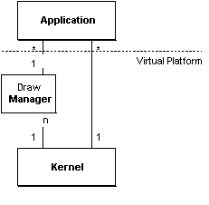
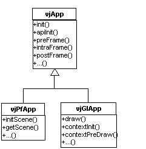

In VR Juggler, all applications are objects. VR Juggler uses the application object to create the VR environment in which the user interacts. The application object implements interfaces needed by the virtual platform to create the virtual environment. (An interface is a collection of operations used to specify a service of a class or a component)
The kernel maintains control over the environment and calls the methods defined in the application interface. When the kernel calls the application's methods it gives up control to the application object so the application can execute the code needed to create the virtual environment.
There is no main() function, instead the VR Juggler kernel controls the application's processing time by calling the application object's method functions. Since VR Juggler applications are objects, developers do not write a main() function. Instead, developers create an application object that implement a set of pre-defined interfaces.
In common programs, the main function signals the point where the thread of control enters the application. After the main function is called, the application starts performing any application processing necessary. When the OS starts the program, it gives the main function some processing time. After the process's quantum expires, the operating system switches to another process.
In VR Juggler, we accomplish the same functionality. The kernel is the scheduler, and it allocates processing time to an application by invoking the methods of the application object. Because the kernel has additional information about the resources needed by the applications, it maintains a very strict scheduling about when the application is granted processing time. This is the basis to maintain coherence across each execution frame.
Application objects can exist either linked in with the kernel startup code or alone as a dynamically loadable object.

This allows for dynamic binding at run-time.
Override methods of the base interfaces.
The first step in defining an application object is to derive from the base classes that define the kernel and draw manager interfaces the application needs to implement. There is a base class for the interface that the kernel expects and a base class for each draw manager interface (see the figure)

The kernel interface specifies methods for initialization, shutdown, and to give the application processing time.
The draw manager interface for this application specifies the functions that are necessary to render and OpenGL application. The interface has functions for drawing the scene and for initializing context-specific information.
The system expects all applications to implement this set of methods that the kernel uses to interact with the application.
The most common approach for VR application development is to have the application define the main function and have the application call library functions when needed. The library in this model only executes code when requested to do so by the application because the application is in control of the main thread of execution. This model makes the application developer responsible to coordinate the execution of the different components of the VR system and, therefore, responsible to create efficient, complex applications.
VR Juggler, being a virtual platform, does not use this model because it needs to maintain control over the different components to provide the flexibility needed to make changes to the virtual platform at run-time.
By being in control of the execution, the kernel always knows the current state of the applications, therefore it can safely manage the run-time reconfigurations of the virtual environment. Under this model, nearly every parameter to configure the execution environment can be changed at run time. It is possible to switch applications, start new devices, reconfigure devices, and send reconfiguration information to the application object.
Application objects lead to a robust architecture as a result of low coupling and well defined inter-object dependencies. The application interface defines the only communication path between the application and the virtual platform. By restricting interactions to the interfaces of the kernel, draw manager, and application, the system restricts object inter-dependencies to those few interfaces. This decreased coupling allows changes in the system to stay local. Changes to one object will not affect another unless the change involves a change of the interface of one of the objects. This leads to more robust and extendable code.
Because the application is simply an object, it is possible to dynamically load and unload applications at run-time. When the virtual platform starts up, it waits for an application to be passed to it. When the application is given to the VR Juggler kernel at run-time, the kernel performs a few initialization steps, and then executes the application.
Since applications use a distinct interface to communicate with the virtual platform, changes to the implementation of the virtual platform do not affect the application. This makes it simple to make significant changes to the implementation of the virtual platform without affecting any applications that currently run on the platform. These changes could include bug fixes, performance tuning, new device support, or any number of other changes.
We believe that this ability to modify the system's behavior at run-time is one of the major strengths of VR Juggler.